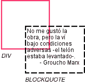
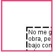
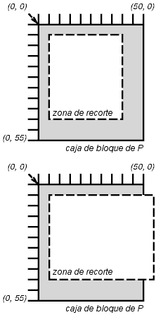

Contenidos
Generalmente, el contenido de una caja de bloque es confinado a los límites del contenido de la caja. En ciertos caso, una caja puede desbordar, significando que su contenido queda parcial o completamente fuera de la caja, por ej.:
Siempre que ocurra el desbordamiento, la propiedad 'overflow' especifica cómo (y si) una caja es recortada. La propiedad 'clip' especifica el tamaño y la forma de la zona de recorte. Especificar una zona de recorte pequeña puede provocar el recorte de contenidos en otro caso visibles.
| Valor: | visible | hidden | scroll | auto | inherit |
| Inicial: | visible |
| Se aplica a: | los elementos a nivel de bloque y reemplazados |
| Se hereda: | no |
| Porcentajes: | N/A |
| Medios: | visual |
Esta propiedad especifica si el contenido de un elemento a nivel de bloque es recortado cuando desborda la caja del elemento (que está actuando como un bloque de contención para el contenido). Los valores tienen los siguientes significados:
Aún si 'overflow' es puesto como 'visible', el contenido puede ser recortado a la ventana del documento de la AU por el entorno operativo nativo.
Considere el siguiente ejemplo de un bloque de cita (BLOCKQUOTE) que es demasiado grande para su bloque de contención (establecido por DIV). Aquí está el documento fuente:
<DIV class="cita"> <BLOCKQUOTE> <P>No me gustó la obra, pero la ví bajo condiciones adversas -el telón estaba levantado-. <DIV class="atribuido-a">- Groucho Marx</DIV> </BLOCKQUOTE> </DIV>
Aquí está la hoja de estilo que controla el tamaño y estilo de las cajas generadas:
DIV.cita { width : 100px; height: 100px;
border: thin solid red;
}
BLOCKQUOTE { width : 125px; height : 100px;
margin-top: 50px; margin-left: 50px;
border: thin dashed black
}
DIV.atribuido-a { text-align : right; }
El valor inicial de 'overflow' es 'visible', de modo que BLOCKQUOTE sera procesado sin recortar, algo como esto:
 [D]
Poniendo 'overflow' como 'hidden' para el elemento DIV, por otro lado, provoca que BLOCKQUOTE sea recortado por el bloque de contención:
 [D]
Un valor de 'scroll' le indicaría a las AU que soportan mecanismos de desplazamiento visibles que muestren uno para que los usuarios puedan acceder al contenido recortado.
Una zona de recorte define qué porción del contenido procesado de un elemento es visible. De manera predeterminada, la zona de recorte tiene el mismo tamaño y forma que la(s) caja(s) del elemento. Sin embargo, la zona de recorte puede ser modificada por la propiedad 'clip'.
La propiedad 'clip' se aplica a elementos que tienen una propiedad 'overflow' con un valor diferente a 'visible'. Los valores tienen los siguientes significados:
<arriba>, <derecha>, <abajo> e <izquierda> pueden tener un valor de <medida> o 'auto'. Las medidas negativas están permitidas. El valor 'auto' significa que un determinado borde de la zona de recorte será el mismo que el borde de la caja generada del elemento (es decir, 'auto' significa lo mismo que '0').
Cuando las coordenadas se redondean a coordenadas en pixeles, se debe tener cuidado de que ningún pixel permanezca visible cuando <izquierdo> + <derecho> es igual al ancho del elemento (o <arriba> + <abajo> es igual a la altura del elemento), y recíprocamente que ningún pixel permanezca oculto cuando estos valores sean 0.
Los antepasados del elemento también pueden tener zonas de recorte (en el caso de que su propiedad 'overflow' no sea 'visible'); lo que se procesa es la intersección de las distintas zonas de recorte.
Si la zona de recorte excede los límites de la ventana del documento de la AU, el contenido puede ser recortado a esa ventana por el entorno operativo nativo.
Las dos reglas siguientes:
P { clip: rect(5px, 10px, 10px, 5px); }
P { clip: rect(5px, -5px, 10px, 5px); }
crearán las zonas de recorte rectangulares delimitadas por las líneas cortadas en las ilustraciones siguientes:
 [D]
Nota. En CSS2, todas las zonas de recorte son rectangulares. Anticipamos futuras extensiones para permitir recortes no rectangulares.
| Valor: | visible | hidden | collapse | inherit |
| Inicial: | inherit |
| Se aplica a: | todos los elementos |
| Se hereda: | no |
| Porcentajes: | N/A |
| Medios: | visual |
La propiedad 'visibility' especifica si las cajas generadas por un elemento son procesadas. Las cajas invisibles siguen afectando la composición (poner la propiedad 'display' como 'none' para suprimir completamente la generación de la caja). Los valores tienen los siguientes significados:
Esta propiedad puede ser usada conjuntamente con scripts para crear efectos dinámicos.
En el siguiente ejemplo, presionando cualquier botón del formulario se invoca una función de script definida por el usuario que provoca que la caja correspondiente se vuelva visible y la otra se oculte. Como estas cajas tiene el mismo tamaño y posición, el efecto es que una reemplaza a la otra. (El código del script está en un lenguaje de script hipotético. Puede o no tener algún efecto en una AU apta para CSS.)
<!DOCTYPE HTML PUBLIC "-//W3C//DTD HTML 4.0//EN">
<HTML>
<HEAD>
<STYLE type="text/css">
<!--
#contenedor1 { position: absolute;
top: 2in; left: 2in; width: 2in }
#contenedor2 { position: absolute;
top: 2in; left: 2in; width: 2in;
visibility: hidden; }
-->
</STYLE>
</HEAD>
<BODY>
<P>Elija un sospechoso:</P>
<DIV id="contenedor1">
<IMG alt="Al Capone"
width="100" height="100"
src="sospechoso1.jpg">
<P>Nombre: Al Capone</P>
<P>Residencia: Chicago</P>
</DIV>
<DIV id="contenedor2">
<IMG alt="Lucky Luciano"
width="100" height="100"
src="sospechoso2.jpg">
<P>Nombre: Lucky Luciano</P>
<P>Residencia: New York</P>
</DIV>
<FORM method="post"
action="http://www.suspect.org/process-bums">
<P>
<INPUT name="Capone" type="button"
value="Capone"
onclick='show("contenedor1");hide("contenedor2")'>
<INPUT name="Luciano" type="button"
value="Luciano"
onclick='show("contenedor2");hide("contenedor1")'>
</FORM>
</BODY>
</HTML>
|
Copyright © 1998 W3C (MIT, INRIA, Keio ), All Rights Reserved.
Traducción: Carlos Benavidez |